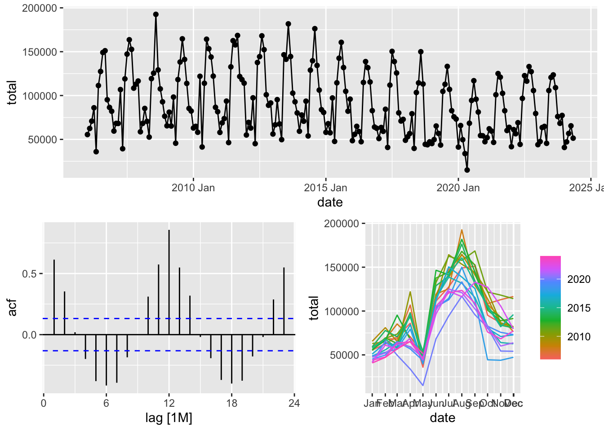

Chapter 1 Components of time series and naive models
1.1 What is time series?
A time series is a sequence of observations or random variables ordered by time.
1.2 Time Series Components
- Trend, cyclicity, seasonality
- Additive and multiplicative decomposition
The additive decomposition of a time series is represented as:
\[Y_t = T_t + S_t + R_t\]
where:
- \(Y_t\) is the observed value at time \(t\),
- \(T_t\) is the trend component,
- \(S_t\) is the seasonal component,
- \(R_t\) is the residual (or random) component.
Trend is a smoothly changing component of a time series.
Seasonality is a strong periodic component with stable intensity.
The multiplicative decomposition of a time series is represented as:
\[Y_t = T_t \times S_t \times R_t\]
where:
- \(Y_t\) is the observed value at time \(t\),
- \(T_t\) is the trend component,
- \(S_t\) is the seasonal component,
- \(R_t\) is the residual (or random) component.
Transform additive to multiplicative:
\[ln(Y_t) = ln(T_t \times S_t \times R_t) = ln(T_t) + ln(S_t) + ln(R_t)\]
1.4 Time Series Characteristics
ACF
\(\hat{y}_t = \hat{\beta}_1 + \hat{\beta}_2 y_{t-1}, ACF_1 = \hat{\beta}_2\)
\(\hat{y}_t = \hat{\beta}_1 + \hat{\beta}_2 y_{t-1}, ACF_2 = \hat{\beta}_2\)
\(\hat{y}_t = \hat{\beta}_1 + \hat{\beta}_2 y_{t-k}, ACF_k = \hat{\beta}_2\)
\(ACF_k\) is a sample correlation between \(y_t\) and \(y_{t-k}\)
1.5 Simple Models
White Noise
Time series \(u_t\) is a white noise, if:
- \(\mathbb{E}(u_t) = 0\)
- \(Var(u_t) = \sigma^2\)
- \(Cov(u_s, u_t) = 0, s \neq t\)
White noise is a part of each statistical model.
Model with independent observations
\(y_t = \mu + u_t\), where \(u_t\) - white noise, \(u_t \sim \mathcal{N}(0, \sigma^2)\)
1.6 Examples
1.6.1 Time series from scratch
Load libraries.
Create time series from scratch.
set.seed(777)
n_obs <- 120
two <- tsibble(date = yearmonth(ymd('2010-01-01') + months(0: (n_obs - 1))),
iid = rnorm(n_obs, mean = 10, sd = 4),
rwalk = 10 + cumsum(rnorm(n_obs, mean = 0, sd = 1)),
index = date)
two## # A tsibble: 120 x 3 [1M]
## date iid rwalk
## <mth> <dbl> <dbl>
## 1 2010 Jan 12.0 10.3
## 2 2010 Feb 8.41 9.33
## 3 2010 Mar 12.0 8.19
## 4 2010 Apr 8.40 8.03
## 5 2010 May 16.6 7.31
## 6 2010 Jun 12.5 7.99
## 7 2010 Jul 10.8 8.50
## 8 2010 Aug 14.4 9.33
## 9 2010 Sep 9.18 10.8
## 10 2010 Oct 8.48 12.4
## # ℹ 110 more rowsHave a look at the data.
Seasonal plots.
1.6.2 Time Series data cleaning
- Libraries loading
- Data Loading
## Классификатор объектов административно-территориального деления (ОКАТО) Единица измерения Период 2006 2007 2008 2009 2010 2011 2012
## 1 643 Российская Федерация 642 единица 115 январь 55509 59495 58668 65507 62980 57949 55008
## 2 643 Российская Федерация 642 единица 114 февраль 62449 68255 68195 81024 64855 68897 69384
## 3 643 Российская Федерация 642 единица M01_02 январь-февраль 117958 127750 126863 146531 127835 126846 124392
## 4 643 Российская Федерация 642 единица 68 март 70798 68173 85275 65250 58124 73713 62912
## 5 643 Российская Федерация 642 единица 122 январь-март 188756 195923 212138 211781 185959 200559 187304
## 6 643 Российская Федерация 642 единица 61 апрель 86055 106800 70528 98242 121953 93631 97401
## 2013 2014 2015 2016 2017 2018 2019 2020 2021 2022 2023 2024
## 1 56123 59291 58050 48523 50940 49005 45259 41233 47328 41675 43990 40799
## 2 66604 77817 67918 55748 63581 52972 49792 65799 52021 61158 47537 47165
## 3 122727 137108 125968 104271 114521 101977 95051 107032 99349 102833 91527 87964
## 4 95343 70717 57537 64867 59183 56637 65253 49667 62088 56438 63539 56778
## 5 218070 207825 183505 169138 173704 158614 160304 156699 161437 159271 155066 144742
## 6 67605 93571 97256 58968 84361 79258 56818 33787 59499 69061 64794 65473## Rows: 2,507
## Columns: 22
## $ `Классификатор объектов административно-территориального деления (ОКАТО)` <chr> "643 Российская Федерация", "643 Российская Федерация", "643 Российская Федерац…
## $ `Единица измерения` <chr> "642 единица", "642 единица", "642 единица", "642 единица", "642 единица", "642…
## $ Период <chr> "115 январь", "114 февраль", "M01_02 январь-февраль", "68 март", "122 январь-ма…
## $ `2006` <dbl> 55509, 62449, 117958, 70798, 188756, 86055, 274811, 35960, 310771, 111409, 4221…
## $ `2007` <dbl> 59495, 68255, 127750, 68173, 195923, 106800, 302723, 39331, 342054, 119012, 461…
## $ `2008` <dbl> 58668, 68195, 126863, 85275, 212138, 70528, 282666, 52634, 335300, 119283, 4545…
## $ `2009` <dbl> 65507, 81024, 146531, 65250, 211781, 98242, 310023, 45622, 355645, 118230, 4738…
## $ `2010` <dbl> 62980, 64855, 127835, 58124, 185959, 121953, 307912, 41339, 349251, 113994, 463…
## $ `2011` <dbl> 57949, 68897, 126846, 73713, 200559, 93631, 294190, 46364, 340554, 132709, 4732…
## $ `2012` <dbl> 55008, 69384, 124392, 62912, 187304, 97401, 284705, 45128, 329833, 137667, 4675…
## $ `2013` <dbl> 56123, 66604, 122727, 95343, 218070, 67605, 285675, 49712, 335387, 146512, 4818…
## $ `2014` <dbl> 59291, 77817, 137108, 70717, 207825, 93571, 301396, 53922, 355318, 128954, 4842…
## $ `2015` <dbl> 58050, 67918, 125968, 57537, 183505, 97256, 280761, 47687, 328448, 114524, 4429…
## $ `2016` <dbl> 48523, 55748, 104271, 64867, 169138, 58968, 228106, 47334, 275440, 114936, 3903…
## $ `2017` <dbl> 50940, 63581, 114521, 59183, 173704, 84361, 258065, 40851, 298916, 111901, 4108…
## $ `2018` <dbl> 49005, 52972, 101977, 56637, 158614, 79258, 237872, 39756, 277628, 103451, 3810…
## $ `2019` <dbl> 45259, 49792, 95051, 65253, 160304, 56818, 217122, 43531, 260653, 104709, 36536…
## $ `2020` <dbl> 41233, 65799, 107032, 49667, 156699, 33787, 190486, 15074, 205560, 68408, 27396…
## $ `2021` <dbl> 47328, 52021, 99349, 62088, 161437, 59499, 220936, 46596, 267532, 100908, 36844…
## $ `2022` <dbl> 41675, 61158, 102833, 56438, 159271, 69061, 228332, 44302, 272634, 96722, 36935…
## $ `2023` <dbl> 43990, 47537, 91527, 63539, 155066, 64794, 219860, 45499, 265359, 105701, 37106…
## $ `2024` <dbl> 40799, 47165, 87964, 56778, 144742, 65473, 210215, 51382, 261597, NA, NA, NA, N…- Data cleaning
## Rows: 2,507
## Columns: 22
## $ region <chr> "643 Российская Федерация", "643 Российская Федерация", "643 Российская Федерация", "643 Российская Федерация", "643 Российская Федерация", "643 Р…
## $ unit <chr> "642 единица", "642 единица", "642 единица", "642 единица", "642 единица", "642 единица", "642 единица", "642 единица", "642 единица", "642 единиц…
## $ period <chr> "115 январь", "114 февраль", "M01_02 январь-февраль", "68 март", "122 январь-март", "61 апрель", "117 январь-апрель", "67 май", "121 январь-май", …
## $ `2006` <dbl> 55509, 62449, 117958, 70798, 188756, 86055, 274811, 35960, 310771, 111409, 422180, 127475, 549655, 149120, 698775, 151116, 849891, 95192, 945083, …
## $ `2007` <dbl> 59495, 68255, 127750, 68173, 195923, 106800, 302723, 39331, 342054, 119012, 461066, 147253, 608319, 163630, 771949, 152696, 924645, 108414, 103305…
## $ `2008` <dbl> 58668, 68195, 126863, 85275, 212138, 70528, 282666, 52634, 335300, 119283, 454583, 125496, 580079, 192591, 772670, 129196, 901866, 107600, 1009466…
## $ `2009` <dbl> 65507, 81024, 146531, 65250, 211781, 98242, 310023, 45622, 355645, 118230, 473875, 138227, 612102, 164684, 776786, 141188, 917974, 113820, 1031794…
## $ `2010` <dbl> 62980, 64855, 127835, 58124, 185959, 121953, 307912, 41339, 349251, 113994, 463245, 164233, 627478, 153402, 780880, 143937, 924817, 122144, 104696…
## $ `2011` <dbl> 57949, 68897, 126846, 73713, 200559, 93631, 294190, 46364, 340554, 132709, 473263, 162556, 635819, 157766, 793585, 168510, 962095, 121711, 1083806…
## $ `2012` <dbl> 55008, 69384, 124392, 62912, 187304, 97401, 284705, 45128, 329833, 137667, 467500, 144355, 611855, 168085, 779940, 152328, 932268, 100937, 1033205…
## $ `2013` <dbl> 56123, 66604, 122727, 95343, 218070, 67605, 285675, 49712, 335387, 146512, 481899, 141354, 623253, 181745, 804998, 144512, 949510, 102743, 1052253…
## $ `2014` <dbl> 59291, 77817, 137108, 70717, 207825, 93571, 301396, 53922, 355318, 128954, 484272, 139684, 623956, 176269, 800225, 134342, 934567, 106211, 1040778…
## $ `2015` <dbl> 58050, 67918, 125968, 57537, 183505, 97256, 280761, 47687, 328448, 114524, 442972, 142572, 585544, 160667, 746211, 131936, 878147, 104838, 982985,…
## $ `2016` <dbl> 48523, 55748, 104271, 64867, 169138, 58968, 228106, 47334, 275440, 114936, 390376, 138733, 529109, 131756, 660865, 115462, 776327, 82752, 859079, …
## $ `2017` <dbl> 50940, 63581, 114521, 59183, 173704, 84361, 258065, 40851, 298916, 111901, 410817, 150368, 561185, 138775, 699960, 125720, 825680, 80249, 905929, …
## $ `2018` <dbl> 49005, 52972, 101977, 56637, 158614, 79258, 237872, 39756, 277628, 103451, 381079, 114416, 495495, 149966, 645461, 113178, 758639, 44413, 803052, …
## $ `2019` <dbl> 45259, 49792, 95051, 65253, 160304, 56818, 217122, 43531, 260653, 104709, 365362, 112845, 478207, 133217, 611424, 107033, 718457, 82727, 801184, 7…
## $ `2020` <dbl> 41233, 65799, 107032, 49667, 156699, 33787, 190486, 15074, 205560, 68408, 273968, 94393, 368361, 116921, 485282, 95794, 581076, 81188, 662264, 543…
## $ `2021` <dbl> 47328, 52021, 99349, 62088, 161437, 59499, 220936, 46596, 267532, 100908, 368440, 125068, 493508, 120961, 614469, 102528, 716997, 82679, 799676, 6…
## $ `2022` <dbl> 41675, 61158, 102833, 56438, 159271, 69061, 228332, 44302, 272634, 96722, 369356, 122660, 492016, 116404, 608420, 133021, 741441, 127250, 868691, …
## $ `2023` <dbl> 43990, 47537, 91527, 63539, 155066, 64794, 219860, 45499, 265359, 105701, 371060, 120668, 491728, 123562, 615290, 108981, 724271, 76096, 800367, 6…
## $ `2024` <dbl> 40799, 47165, 87964, 56778, 144742, 65473, 210215, 51382, 261597, NA, NA, NA, NA, NA, NA, NA, NA, NA, NA, NA, NA, NA, NA, 10552, 12696, 23248, 146…## [1] "115 январь" "114 февраль" "M01_02 январь-февраль" "68 март" "122 январь-март" "61 апрель"
## [7] "117 январь-апрель" "67 май" "121 январь-май" "66 июнь" "120 январь-июнь" "65 июль"
## [13] "119 январь-июль" "60 август" "116 январь-август" "108 сентябрь" "125 январь-сентябрь" "105 октябрь"
## [19] "124 январь-октябрь" "104 ноябрь" "123 январь-ноябрь" "62 декабрь" "118 январь-декабрь"## [1] 10 11 21 7 15 9 17 6 14 7 15 7 15 9 17 12 19 11 18 10 17 10 18## [1] "115 январь" "114 февраль" "68 март" "61 апрель" "67 май" "66 июнь" "65 июль" "60 август" "108 сентябрь" "105 октябрь"
## [11] "104 ноябрь" "62 декабрь"## # A tibble: 12 × 2
## period month
## <chr> <int>
## 1 115 январь 1
## 2 114 февраль 2
## 3 68 март 3
## 4 61 апрель 4
## 5 67 май 5
## 6 66 июнь 6
## 7 65 июль 7
## 8 60 август 8
## 9 108 сентябрь 9
## 10 105 октябрь 10
## 11 104 ноябрь 11
## 12 62 декабрь 12## region unit period 2006 2007 2008 2009 2010 2011 2012 2013 2014 2015 2016 2017 2018 2019 2020 2021
## 1 643 Российская Федерация 642 единица 115 январь 55509 59495 58668 65507 62980 57949 55008 56123 59291 58050 48523 50940 49005 45259 41233 47328
## 2 643 Российская Федерация 642 единица 114 февраль 62449 68255 68195 81024 64855 68897 69384 66604 77817 67918 55748 63581 52972 49792 65799 52021
## 3 643 Российская Федерация 642 единица 68 март 70798 68173 85275 65250 58124 73713 62912 95343 70717 57537 64867 59183 56637 65253 49667 62088
## 4 643 Российская Федерация 642 единица 61 апрель 86055 106800 70528 98242 121953 93631 97401 67605 93571 97256 58968 84361 79258 56818 33787 59499
## 5 643 Российская Федерация 642 единица 67 май 35960 39331 52634 45622 41339 46364 45128 49712 53922 47687 47334 40851 39756 43531 15074 46596
## 6 643 Российская Федерация 642 единица 66 июнь 111409 119012 119283 118230 113994 132709 137667 146512 128954 114524 114936 111901 103451 104709 68408 100908
## 2022 2023 2024 month
## 1 41675 43990 40799 1
## 2 61158 47537 47165 2
## 3 56438 63539 56778 3
## 4 69061 64794 65473 4
## 5 44302 45499 51382 5
## 6 96722 105701 NA 6## region 2006 2007 2008 2009 2010 2011 2012 2013 2014 2015 2016 2017 2018 2019 2020 2021 2022 2023 2024 month
## 1 643 Российская Федерация 55509 59495 58668 65507 62980 57949 55008 56123 59291 58050 48523 50940 49005 45259 41233 47328 41675 43990 40799 1
## 2 643 Российская Федерация 62449 68255 68195 81024 64855 68897 69384 66604 77817 67918 55748 63581 52972 49792 65799 52021 61158 47537 47165 2
## 3 643 Российская Федерация 70798 68173 85275 65250 58124 73713 62912 95343 70717 57537 64867 59183 56637 65253 49667 62088 56438 63539 56778 3
## 4 643 Российская Федерация 86055 106800 70528 98242 121953 93631 97401 67605 93571 97256 58968 84361 79258 56818 33787 59499 69061 64794 65473 4
## 5 643 Российская Федерация 35960 39331 52634 45622 41339 46364 45128 49712 53922 47687 47334 40851 39756 43531 15074 46596 44302 45499 51382 5
## 6 643 Российская Федерация 111409 119012 119283 118230 113994 132709 137667 146512 128954 114524 114936 111901 103451 104709 68408 100908 96722 105701 NA 6## # A tibble: 6 × 4
## region month year total
## <chr> <int> <chr> <dbl>
## 1 643 Российская Федерация 1 2006 55509
## 2 643 Российская Федерация 1 2007 59495
## 3 643 Российская Федерация 1 2008 58668
## 4 643 Российская Федерация 1 2009 65507
## 5 643 Российская Федерация 1 2010 62980
## 6 643 Российская Федерация 1 2011 57949## Rows: 24,852
## Columns: 4
## $ region <chr> "643 Российская Федерация", "643 Российская Федерация", "643 Российская Федерация", "643 Российская Федерация", "643 Российская Федерация", "643 Р…
## $ month <int> 1, 1, 1, 1, 1, 1, 1, 1, 1, 1, 1, 1, 1, 1, 1, 1, 1, 1, 1, 2, 2, 2, 2, 2, 2, 2, 2, 2, 2, 2, 2, 2, 2, 2, 2, 2, 2, 2, 3, 3, 3, 3, 3, 3, 3, 3, 3, 3, 3,…
## $ year <chr> "2006", "2007", "2008", "2009", "2010", "2011", "2012", "2013", "2014", "2015", "2016", "2017", "2018", "2019", "2020", "2021", "2022", "2023", "2…
## $ total <dbl> 55509, 59495, 58668, 65507, 62980, 57949, 55008, 56123, 59291, 58050, 48523, 50940, 49005, 45259, 41233, 47328, 41675, 43990, 40799, 62449, 68255,…## Rows: 24,852
## Columns: 5
## $ region <chr> "643 Российская Федерация", "643 Российская Федерация", "643 Российская Федерация", "643 Российская Федерация", "643 Российская Федерация", "643 Р…
## $ month <int> 1, 1, 1, 1, 1, 1, 1, 1, 1, 1, 1, 1, 1, 1, 1, 1, 1, 1, 1, 2, 2, 2, 2, 2, 2, 2, 2, 2, 2, 2, 2, 2, 2, 2, 2, 2, 2, 2, 3, 3, 3, 3, 3, 3, 3, 3, 3, 3, 3,…
## $ year <chr> "2006", "2007", "2008", "2009", "2010", "2011", "2012", "2013", "2014", "2015", "2016", "2017", "2018", "2019", "2020", "2021", "2022", "2023", "2…
## $ total <dbl> 55509, 59495, 58668, 65507, 62980, 57949, 55008, 56123, 59291, 58050, 48523, 50940, 49005, 45259, 41233, 47328, 41675, 43990, 40799, 62449, 68255,…
## $ date <mth> 2006 Jan, 2007 Jan, 2008 Jan, 2009 Jan, 2010 Jan, 2011 Jan, 2012 Jan, 2013 Jan, 2014 Jan, 2015 Jan, 2016 Jan, 2017 Jan, 2018 Jan, 2019 Jan, 2020 J…## Rows: 24,852
## Columns: 6
## $ code <chr> "643", "643", "643", "643", "643", "643", "643", "643", "643", "643", "643", "643", "643", "643", "643", "643", "643", "643", "643", "643", "643", …
## $ name <chr> "Российская Федерация", "Российская Федерация", "Российская Федерация", "Российская Федерация", "Российская Федерация", "Российская Федерация", "Ро…
## $ month <int> 1, 1, 1, 1, 1, 1, 1, 1, 1, 1, 1, 1, 1, 1, 1, 1, 1, 1, 1, 2, 2, 2, 2, 2, 2, 2, 2, 2, 2, 2, 2, 2, 2, 2, 2, 2, 2, 2, 3, 3, 3, 3, 3, 3, 3, 3, 3, 3, 3, …
## $ year <chr> "2006", "2007", "2008", "2009", "2010", "2011", "2012", "2013", "2014", "2015", "2016", "2017", "2018", "2019", "2020", "2021", "2022", "2023", "20…
## $ total <dbl> 55509, 59495, 58668, 65507, 62980, 57949, 55008, 56123, 59291, 58050, 48523, 50940, 49005, 45259, 41233, 47328, 41675, 43990, 40799, 62449, 68255, …
## $ date <mth> 2006 Jan, 2007 Jan, 2008 Jan, 2009 Jan, 2010 Jan, 2011 Jan, 2012 Jan, 2013 Jan, 2014 Jan, 2015 Jan, 2016 Jan, 2017 Jan, 2018 Jan, 2019 Jan, 2020 Ja…## Rows: 24,852
## Columns: 4
## $ code <chr> "643", "643", "643", "643", "643", "643", "643", "643", "643", "643", "643", "643", "643", "643", "643", "643", "643", "643", "643", "643", "643", …
## $ name <chr> "Российская Федерация", "Российская Федерация", "Российская Федерация", "Российская Федерация", "Российская Федерация", "Российская Федерация", "Ро…
## $ total <dbl> 55509, 59495, 58668, 65507, 62980, 57949, 55008, 56123, 59291, 58050, 48523, 50940, 49005, 45259, 41233, 47328, 41675, 43990, 40799, 62449, 68255, …
## $ date <mth> 2006 Jan, 2007 Jan, 2008 Jan, 2009 Jan, 2010 Jan, 2011 Jan, 2012 Jan, 2013 Jan, 2014 Jan, 2015 Jan, 2016 Jan, 2017 Jan, 2018 Jan, 2019 Jan, 2020 Ja…## # A tsibble: 24,852 x 4 [1M]
## # Key: code, name [109]
## code name total date
## <chr> <chr> <dbl> <mth>
## 1 01000000000 Алтайский край 953 2006 Jan
## 2 01000000000 Алтайский край 1007 2006 Feb
## 3 01000000000 Алтайский край 1311 2006 Mar
## 4 01000000000 Алтайский край 1554 2006 Apr
## 5 01000000000 Алтайский край 562 2006 May
## 6 01000000000 Алтайский край 1900 2006 Jun
## 7 01000000000 Алтайский край 2338 2006 Jul
## 8 01000000000 Алтайский край 3034 2006 Aug
## 9 01000000000 Алтайский край 2460 2006 Sep
## 10 01000000000 Алтайский край 1762 2006 Oct
## # ℹ 24,842 more rows## Plot variable not specified, automatically selected `.vars = total`## Warning: Removed 7 rows containing missing values or values outside the scale range (`geom_line()`).## Rows: 24,852
## Columns: 4
## $ code <int64> 1000000000, 1000000000, 1000000000, 1000000000, 1000000000, 1000000000, 1000000000, 1000000000, 1000000000, 1000000000, 1000000000, 1000000000, 1…
## $ name <chr> "Алтайский край", "Алтайский край", "Алтайский край", "Алтайский край", "Алтайский край", "Алтайский край", "Алтайский край", "Алтайский край", "Ал…
## $ total <int> 953, 1007, 1311, 1554, 562, 1900, 2338, 3034, 2460, 1762, 1411, 1554, 1069, 1221, 1330, 1774, 609, 2107, 2708, 3272, 2483, 1825, 1721, 1940, 1006, …
## $ date <IDate> 2006-01-01, 2006-02-01, 2006-03-01, 2006-04-01, 2006-05-01, 2006-06-01, 2006-07-01, 2006-08-01, 2006-09-01, 2006-10-01, 2006-11-01, 2006-12-01, 2…ts_marriages <- m |>
mutate(date = yearmonth(date)) |>
as_tsibble(index = date, key = c('code', 'name'))
glimpse(ts_marriages)## Rows: 24,852
## Columns: 4
## Key: code, name [109]
## $ code <int64> 30, 30, 30, 30, 30, 30, 30, 30, 30, 30, 30, 30, 30, 30, 30, 30, 30, 30, 30, 30, 30, 30, 30, 30, 30, 30, 30, 30, 30, 30, 30, 30, 30, 30, 30, 30, 3…
## $ name <chr> "Центральный федеральный округ", "Центральный федеральный округ", "Центральный федеральный округ", "Центральный федеральный округ", "Центральный фе…
## $ total <int> 14845, 16414, 15753, 21803, 9384, 29571, 35691, 39263, 40480, 24137, 21207, 19009, 15433, 17430, 13878, 29703, 10529, 31572, 41328, 42609, 41779, 2…
## $ date <mth> 2006 Jan, 2006 Feb, 2006 Mar, 2006 Apr, 2006 May, 2006 Jun, 2006 Jul, 2006 Aug, 2006 Sep, 2006 Oct, 2006 Nov, 2006 Dec, 2007 Jan, 2007 Feb, 2007 Ma…## # A tsibble: 6 x 4 [1M]
## # Key: code, name [1]
## code name total date
## <int64> <chr> <int> <mth>
## 1 30 Центральный федеральный округ 14845 2006 Jan
## 2 30 Центральный федеральный округ 16414 2006 Feb
## 3 30 Центральный федеральный округ 15753 2006 Mar
## 4 30 Центральный федеральный округ 21803 2006 Apr
## 5 30 Центральный федеральный округ 9384 2006 May
## 6 30 Центральный федеральный округ 29571 2006 Jun## Warning: Removed 7 rows containing missing values or values outside the scale range (`geom_line()`).## Warning: Removed 7 rows containing missing values or values outside the scale range (`geom_point()`).## Warning: Removed 7 rows containing missing values or values outside the scale range (`geom_line()`).## # A tsibble: 6 x 4 [1M]
## # Key: code, name [1]
## code name total date
## <int64> <chr> <int> <mth>
## 1 643 Российская Федерация 55509 2006 Jan
## 2 643 Российская Федерация 62449 2006 Feb
## 3 643 Российская Федерация 70798 2006 Mar
## 4 643 Российская Федерация 86055 2006 Apr
## 5 643 Российская Федерация 35960 2006 May
## 6 643 Российская Федерация 111409 2006 Jun## # A tsibble: 10 x 4 [1M]
## # Key: code, name [1]
## code name total date
## <int64> <chr> <int> <mth>
## 1 643 Российская Федерация 56778 2024 Mar
## 2 643 Российская Федерация 65473 2024 Apr
## 3 643 Российская Федерация 51382 2024 May
## 4 643 Российская Федерация NA 2024 Jun
## 5 643 Российская Федерация NA 2024 Jul
## 6 643 Российская Федерация NA 2024 Aug
## 7 643 Российская Федерация NA 2024 Sep
## 8 643 Российская Федерация NA 2024 Oct
## 9 643 Российская Федерация NA 2024 Nov
## 10 643 Российская Федерация NA 2024 Dec## Warning: There was 1 warning in `filter()`.
## ℹ In argument: `date < ymd("2024-06-01")`.
## Caused by warning:
## ! Incompatible methods ("<.vctrs_vctr", "<.Date") for "<" 4. Time Series Analysis
stl_model <- m_rf_full |>
model(decomp = STL(total ~ trend(window = 7) + season(window = 100)))
components(stl_model)## # A dable: 221 x 9 [1M]
## # Key: code, name, .model [1]
## # : total = trend + season_year + remainder
## code name .model date total trend season_year remainder season_adjust
## <int64> <chr> <chr> <mth> <int> <dbl> <dbl> <dbl> <dbl>
## 1 643 Российская Федерация decomp 2006 Jan 55509 94148. -38464. -175. 93973.
## 2 643 Российская Федерация decomp 2006 Feb 62449 93714. -28148. -3116. 90597.
## 3 643 Российская Федерация decomp 2006 Mar 70798 92846. -25553. 3505. 96351.
## 4 643 Российская Федерация decomp 2006 Apr 86055 91970. -11524. 5608. 97579.
## 5 643 Российская Федерация decomp 2006 May 35960 89642. -47305. -6377. 83265.
## 6 643 Российская Федерация decomp 2006 Jun 111409 87064. 23080. 1265. 88329.
## 7 643 Российская Федерация decomp 2006 Jul 127475 89339. 43219. -5083. 84256.
## 8 643 Российская Федерация decomp 2006 Aug 149120 93710. 59269. -3859. 89851.
## 9 643 Российская Федерация decomp 2006 Sep 151116 95884. 39842. 15390. 111274.
## 10 643 Российская Федерация decomp 2006 Oct 95192 96999. 5812. -7619. 89380.
## # ℹ 211 more rowsm_rf_full |>
model(decomp = STL(total ~ trend(window = 100) + season(window = 100))) |>
components() |>
autoplot()m_rf_full |>
model(decomp = STL(total ~ trend(window = 100) + season(window = 5))) |>
components() |>
autoplot()- Time series features
## Warning: 1 error encountered for feature 1
## [1] series is not periodic or has less than two periods## Rows: 109
## Columns: 11
## $ code <int64> 30, 31, 32, 33, 34, 35, 36, 37, 38, 39, 40, 41, 42, 643, 1000000000, 3000000000, 4000000000, 4100000000, 4130000000, 5000000000,…
## $ name <chr> "Центральный федеральный округ", "Северо-Западный федеральный округ", "Южный федеральный округ (по 2009 год)", "Приволжский федера…
## $ trend_strength <dbl> 0.4745444, 0.6401144, 0.2735227, 0.6898244, 0.6726793, 0.8879235, 0.8977269, 0.3769994, 0.8598947, NA, 0.3462742, 0.4152795, 0.350…
## $ seasonal_strength_year <dbl> 0.9104450, 0.9402161, 0.9143495, 0.9274390, 0.9170236, 0.9279884, 0.9232011, 0.9152458, 0.8603297, NA, 0.8763794, 0.8881947, 0.709…
## $ seasonal_peak_year <dbl> 8, 8, 9, 8, 8, 8, 8, 9, 8, NA, 9, 7, 9, 8, 8, 9, 8, 4, 7, 9, 9, 8, 8, 8, 8, 0, 9, 8, 8, 8, 9, 8, 8, 8, 8, 8, 7, 3, 8, 8, 8, 9, 0, …
## $ seasonal_trough_year <dbl> 5, 5, 5, 5, 5, 5, 5, 5, 5, NA, 5, 5, 5, 5, 5, 5, 5, 5, 5, 5, 5, 5, 5, 5, 5, 5, 1, 5, 5, 5, 5, 5, 5, 5, 5, 5, 5, 9, 5, 5, 5, 5, 5, …
## $ spikiness <dbl> 5.800426e+09, 4.480502e+07, 5.464045e+09, 1.368004e+09, 4.204206e+07, 7.158124e+08, 7.523537e+06, 4.923785e+08, 5.955185e+06, NA, …
## $ linearity <dbl> -2.762647e+04, -9.940055e+03, 1.537425e+03, -3.859673e+04, -1.434080e+04, -3.124289e+04, -9.716159e+03, -5.521401e+03, -1.387037e+…
## $ curvature <dbl> -6218.202397, -3926.339624, -4222.782950, -8211.754292, -2541.293495, -28907.276985, -9743.252883, -4522.012404, 1131.403734, NA, …
## $ stl_e_acf1 <dbl> -0.1485399418, 0.1760381438, -0.3645523140, -0.2103411578, -0.0160823966, 0.0220078173, -0.0922420573, -0.2896106342, 0.0265822139…
## $ stl_e_acf10 <dbl> 0.21015807, 0.22301008, 0.66946204, 0.21063083, 0.21637186, 0.19238858, 0.17854895, 0.29795679, 0.09421211, NA, 0.22297834, 0.5031…